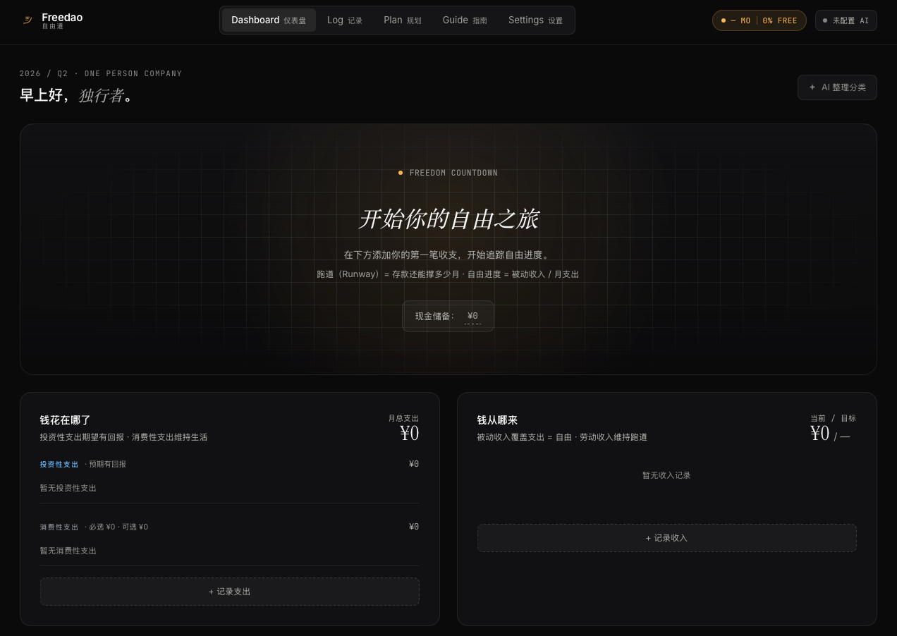

不是记账软件。是独立创业者的财务自由导航系统。
被动收入 ≥ 月支出 = 初步自由

存款 ÷ 月缺口 = 你还能撑多少个月。让"够不够用"变成一个能盯的数字。
被动收入 ÷ 月支出 = 通往自由的百分比。劳动维持跑道，被动通往自由。
滑动"月支出减 X%"、"收入加 Y"、"现金注入 Z"，跑道立刻变长或变短。
支出分投资 vs 消费、必选 vs 可选，收入分劳动 vs 被动。BYOK，Key 在你本地。
记录每周时间分配（产品/学习/接单/行政），估出真实时薪，看清时间的 ROI。
数据存在你本地。没有账号，没有云端，AI Key 也从你电脑直连模型。
我是独立开发者，连续两年踩同样的坑：
账户里有钱 ≠ 自由。这个月收支平衡 ≠ 下个月也平衡。看到别人"月入十万"很焦虑，但说不清自己离"不用焦虑"到底差多远。
Freedao 把这些翻译成每天能看一眼的导航数字。不是给"早日退休"的人，是给**正在独立做事、需要下一步方向**的人。
目前只有 macOS 版本（Apple Silicon + Intel）。Windows / Linux 会随后跟上。
因为还没买 Apple Developer 签名，首次打开会有一个小阻力，下面告诉你怎么过。
这是 macOS 安全机制的默认保护。两种解法，任选其一：
方法 1 · 右键打开（小白推荐）
Finder 里找到 Freedao.app → 按住 Control 右键 → "打开" → 弹窗里再点"打开"。以后双击就正常了。
方法 2 · 终端一行命令
xattr -cr /Applications/Freedao.app为什么这行命令就能解决？→
开源工具免费。案例库（具体的"怎么省出 500"、"怎么从 0 到 1 赚到"）正在准备，加入 Waitlist 抢先体验。
加入 Waitlist